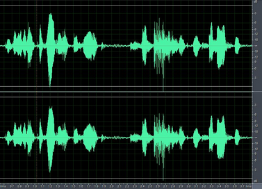
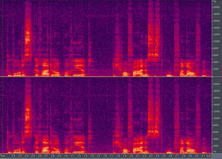
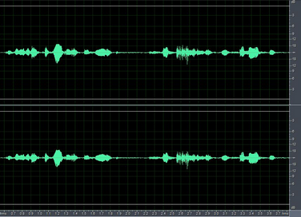
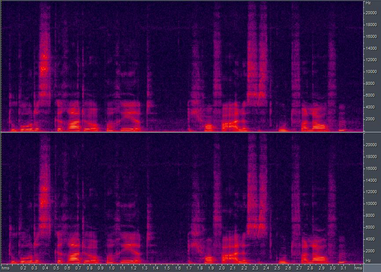
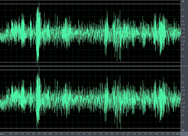
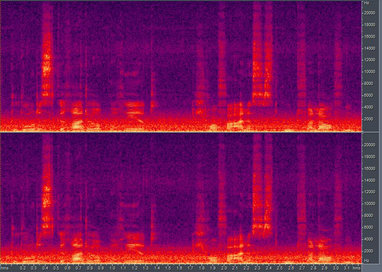

About Audio Recording Level |
Top Previous Next |
|
Good audio sampling is important to achieve a high recognition rate when using the SDK voice recognition module. The audio samples should have peaks that are between FS -3dB and FS -12dB, where FS is the full scale of analog-to-digital (ADC) converter. An example of good audio samples with the desired audio recording levels for left and right channels is shown in Figure 48, in waveform and spectrogram displays, respectively.  Figure 48: Audio Samples with Desired Audio Recording Levels An example of audio samples with low audio recording levels for left and right channels is shown in Figure 49, in waveform and spectrogram displays, respectively.  Figure 49: Audio Sample with Low Audio Recording Levels An example of audio samples with desired speech levels in noisy environment for left and right channels is shown in Figure 50, in waveform and spectrogram display, respectively.  Figure 50: Audio Samples in Noisy Environment Adjusting audio recording level To adjust the audio recording level, use the SetVolume function. Example 81 shows how to set the audio recording level. It is recommended that your application provide such control for voice recognition and visually give feedback of whether the user's volume is just right, too high or too low. C++ Example 81: Adjust Audio Recording Level
C# Example 81: Adjust Audio Recording Level
Java Example 81: Adjust Audio Recording Level
|